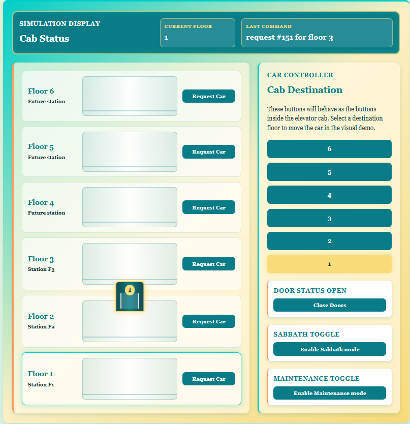

Main task or topic
I updated the elevator control-room interface so it can display six floors while remaining recognizable as the original page. I kept the intro card, control-status summary, dark status HUD, floor tower on the left, controller on the right, and the existing door/Sabbath/maintenance layout.
The main structural changes were:
- Six floor-station rows instead of three manually repeated rows.
- Six cab buttons in a 3 by 2 grid.
- Floors 4 to 6 displayed as interface previews until their controller nodes exist.
- A maintenance-only single-floor lockout panel.
- A darker elevator car with separate sliding doors.
-
Existing element IDs and
data-*attributes preserved for JavaScript.
Generating floor rows with PHP
The floor rows are now generated using a PHP for loop:
<?php for($floorNumber = 6; $floorNumber >= 1; $floorNumber--): ?>
<!-- one floor row -->
<?php endfor; ?>
This is the same general idea as using foreach, but
for is more direct here because the required values are
the known numerical range 6 down to 1. -- generates them
in reverse.
Each pass uses $floorNumber to generate the label and
JavaScript data:
data-floor="<?php echo $floorNumber; ?>"
The current floor receives active-floor, and Floors 4 to
6 receive an interface-preview marker:
data-interface-only="<?php echo $floorNumber > 3 ? 'true' : 'false'; ?>"The page therefore shows the future six-floor layout without sending unsupported requests to the current three-floor PHP/CAN system.
Elevator car placement
Only one elevator-car element should exist. It is created while PHP is generating Floor 6:
<?php if($floorNumber === 6): ?>
<div class="elevator-car" id="elevatorCar">
<span class="car-screen"><?php echo $initialFloor; ?></span>
<span class="car-door"></span>
</div>
<?php endif; ?>
JavaScript moves this one element vertically across the full tower.
The <span class="car-door"> is later split into
left and right panels using CSS pseudo-elements.
Cab controller loop
The six car buttons are generated by another descending loop:
<?php for($floorNumber = 6; $floorNumber >= 1; $floorNumber--): ?>
<button type="button"
class="car-floor-button"
data-floor="<?php echo $floorNumber; ?>">
<?php echo $floorNumber; ?>
</button>
<?php endfor; ?>The HTML only defines the six buttons. CSS is responsible for placing them into the final 3 by 2 arrangement.
Preserving working controls
The door, Sabbath, and maintenance controls were grouped inside
mode-control-stack. Their important IDs were not changed:
doorToggleButton
doorStatusDisplay
sabbathToggle
maintenanceToggleKeeping these IDs meant the existing event listeners and AJAX functions could continue working without rewriting the control logic.
The maintenance toggle remains administrator-only:
<?php if(($_SESSION['user_role'] ?? '') === 'admin'): ?>Maintenance lockout markup
The new floorLockoutPanel is also only printed for an
administrator. It begins hidden unless the database already reports
maintenance mode:
<section class="floor-lockout-panel" id="floorLockoutPanel"
<?php echo $initialOperationMode === 'maintenance' ? '' : 'hidden'; ?>>
Its six floor controls use an ascending loop from 1 to 6. Each card
contains a floor number, status text, and a
floor-lockout-button with a matching
data-floor value.
This version is a visual prototype. It does not yet write floor lockouts to MariaDB or notify the Raspberry Pi.
JavaScript: six floor positions
carPositions was expanded so the car can visually move
through every displayed row:
const carPositions = {
"1": "-580px",
"2": "-462px",
"3": "-344px",
"4": "-226px",
"5": "-108px",
"6": "10px"
};
moveCarToFloor() uses the selected value to change
elevatorCar.style.bottom. It also updates the
current-floor readout, car screen, active floor row, and active car
button.
JavaScript: preview-floor protection
Both floor-station and cab-button handlers check the generated data attribute:
if(button.dataset.interfaceOnly === "true") {
lastCommandDisplay.textContent =
"Floor " + floor +
" interface ready - controller node not configured yet";
return;
}
return ends the click handler before
sendElevatorRequest() can run. This is a client-side
convenience; PHP still validates the accepted floors independently.
JavaScript: maintenance display
updateMaintenanceDisplay() now controls the lockout panel
as well as the maintenance button:
if(maintenanceEnabled === true) {
floorLockoutPanel.hidden = false;
} else {
floorLockoutPanel.hidden = true;
}
When a lockout button is clicked, JavaScript toggles
is-locked on the maintenance card and
floor-locked on the matching floor row and cab button. It
also changes the visible status between Available and
Out of service.
The request handlers check for floor-locked before
continuing, so the visual prototype blocks that floor on the current
browser. Refreshing the page clears the lock because no database
handling exists yet.
Result
The page is now an updated version of the original interface rather than a completely new page... For now. Floors 1 to 3 keep their real request behavior, Floors 4 to 6 clearly show the planned expansion, and the maintenance panel establishes the HTML/JavaScript structure needed for persistent single-floor lockout later.
The new layout can be seen below. Next, I'd like to alter some of the CSS and tweak JS a bit for functionality as this upgrade broke the JS logic (due to data-xxx values and id changing).
